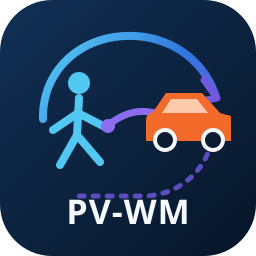

Typed Complete State
Pedestrian root and articulation, vehicle state and extent, pair relations, and validity masks remain explicit throughout the rollout.

Local pedestrian-vehicle forecasting spans heterogeneous physical scales: pedestrians combine root locomotion with articulated motion, whereas vehicles are rigid bodies described by kinematic state and oriented extent. Existing road-agent forecasters typically omit pedestrian articulation, while pose forecasters leave vehicle futures outside the learned rollout. We introduce PV-WM, a history-only world model over structured post-perception tracks.
PV-WM recurrently advances pedestrian root motion, 15-joint articulation, and learned vehicle states within a synchronized heterogeneous state. Generated pedestrian and vehicle chunks form the next recurrent boundary; vehicle boxes are reconstructed from predicted center and heading with observed extent, and pedestrian-vehicle geometry is recomputed after every transition. Evaluations on aligned Waymo contexts show improved pedestrian, interaction-geometry, and efficiency measures over matched complete-state alternatives, while feedback interventions verify that later transitions reuse generated articulation.
A single recurrent model advances heterogeneous agents together without collapsing their distinct physical structure.
Pedestrian root and articulation, vehicle state and extent, pair relations, and validity masks remain explicit throughout the rollout.
Each generated chunk becomes the next recurrent boundary, allowing later predictions to depend on the model's own evolving world state.
Vehicle boxes are reconstructed from predicted centers and headings, while observed extent preserves rigid-body geometry.
Pedestrian-vehicle geometry is recomputed after every transition so pairwise state stays synchronized with generated agents.
Typed encoders initialize the world state, recurrent decoders predict heterogeneous futures, and physical closure refreshes the next boundary.
PV-WM encodes articulated pedestrians, rigid vehicles, pair relations, and masks into a synchronized typed state. Pedestrian and vehicle readouts predict the next chunk; box reconstruction and relation recomputation then close the state before recurrent feedback.
Segment-grouped, context-disjoint five-fold evaluation across aligned Waymo scenes.
Pedestrian measures use 824 contexts; vehicle and pairwise measures use the 797 contexts with valid future vehicle support. Trainable models are evaluated with three seeds, and system checkpoints are selected using validation splits only.
Joint pedestrian and vehicle futures in moving-interaction and near-interaction scenes.
Black denotes ground truth, red the selected Modular Specialist, and blue PV-WM. The examples visualize articulated pedestrian motion together with vehicle boxes rather than evaluating either future in isolation.
Targeted interventions at the recurrent boundary test whether later predictions depend on generated pose content, temporal order, and pedestrian identity.
Removing articulated variation tests whether future transitions use pose content rather than root motion alone.
Reordering generated articulation tests sensitivity to the temporal structure of the recurrent state.
Swapping pose feedback across pedestrians tests whether identity-specific articulation drives later predictions.
Positive changes indicate degradation relative to factual feedback, providing functional evidence that recurrent transitions reuse generated articulation.
@misc{chi2026pvwm,
title = {PV-WM: A Heterogeneous Micro-Macro World Model for Articulated Pedestrian-Vehicle Co-Rollout},
author = {Haozhuang Chi and Jingsong Liang and Ziying Song and Lei Yang and Shihao Li and Haoruo Zhang and Chen Lv},
year = {2026},
eprint = {2609.07328},
archivePrefix = {arXiv},
primaryClass = {cs.RO},
url = {https://arxiv.org/abs/2609.07328}
}Experiments use aligned tracks from the Waymo Open Dataset and Waymo-3DSkelMo. The schematic local-scene illustration in the architecture figure was generated with OpenAI ChatGPT and subsequently edited by the authors; it contains no experimental data.